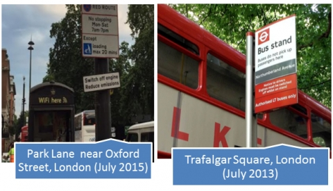

The National Idling Reduction Network brings together trucking and transit companies; railroads; ports; equipment manufacturers; Federal, state, and local government agencies (including regulators); nonprofit organizations; and national research laboratories to identify consistent, workable solutions to heavy-vehicle idling for the entire United States. Below is the July 2015 issue of the National Idling Reduction Network News; the archives are available on the Archives page and the latest issue is on the main NIRNN page.
Subscribe to the Newsletter
To receive NIRNN by e-mail monthly, please e-mail Patricia Weikersheimer. If you have news you believe would be of interest to newsletter readers, please send it to idlingreduction@anl.gov
July 2015 National Idling Reduction Network News: From the Editor
How I Spent My Summer Vacation
It's my opinion that everyone around the world does the same things, but they do them differently. After my mini “Grand Tour” of southern Europe and London earlier this month, my observations of vehicles idling there lend credence to my view.
To be fair, I must admit that the temperature was in the mid 30s C there (mid 90s F to us) and that it was always sunny. For context here at home, some states and localities that prohibit idling do allow it when temperatures are above a stated number (e.g., 75°F in Oregon or 92°F in Salt Lake City).
What I noted was:
- Tour buses idle almost constantly, whether they're waiting at the cruise ship dock or a tourist destination.
- Idling costs add up fast when fuel prices range from €1.23/liter for diesel and €1.30/liter for gasoline in Barcelona to £1.25/liter for gasoline and £1.40/liter for diesel in London.
- London Transport uses some diesel-hybrid buses while Aix-en-Provence has some natural gas buses.
- London was the only city where I saw any anti-idling signs.

We'd welcome any information you have about idling reduction policies in Europe. Also, please send us any pictures you've taken of anti-idling signs outside the United States.
Terry M. Levinson, Editor
Energetics Incorporated
tlevinson@energetics.com
Patricia Weikersheimer, Writer
Argonne National Laboratory
pweikersheimer@anl.gov
Solicitations for Funding and Awards
Program (with link to website) — Organization — Funding Amount — Due Date (Information new since last month in boldface.)
Deadline in Chronological Order
-
Idling Reduction Pilot Project — Colorado Energy Office — $250,000 — August 13, 2015.
-
2016 Clean Air Excellence Awards Program — U.S. EPA — Not applicable — September 11, 2015.
-
Wisconsin Diesel Truck Idling Reduction Grant Program — Wisconsin Department of Administration — $1 million — September 11, 2015.
-
Clean Fleets North Texas 2015 Call for Projects (Expected to open August 17, 2015, pending regional council approval) — North Central Texas Council of Governments (NCTCOG) — $2.5 million — October 23, 2015.
First Come, First Served
-
Clean Air Fleets (GPS and retrofit technologies to support idle reduction in the Denver Metro area and Colorado Front Range) — Colorado Regional Air Quality Council — ~$1 million.
-
Clean Fuel Transition Fund for Public Fleets (includes idling reduction) — Southeast Louisiana Clean Fuel Partnership — $909,200.
-
New York State Electric Vehicle Voucher Incentive Fund (NYSEV-VIF) — NYSERDA — $9 million.
-
Small Business Pollution Prevention Assistance Account Loan Program — Pennsylvania Department of Environmental Protection — $2 million annually.
Rolling Deadline Until Funds Are Awarded
-
Business Assistance Program, Environmental Loans for Small Businesses — Arkansas Department of Environmental Quality — Indeterminate.
-
On-Road Heavy-Duty Vehicle Loan Program — California Air Resources Board (CARB) — ~$48 million for loan guarantees.
-
Illinois Clean Diesel Grant Program (school buses only) — Illinois EPA — $1 million annually through 2016.
-
Driver Recognition Program: Diesel Idle Reduction Campaign — Metropolitan Washington Council of Governments (COG), in collaboration with the District Department of the Environment, the District Department of Transportation, and the Maryland Department of the Environment — Not applicable — Rolling deadline: the 15th of every month.
-
Small Business APU (auxiliary power unit) Loan Prog — Minnesota Pollution Control Agency (MPCA) — $110,000.
Regulatory News
Public Hearings Scheduled for Phase 2 GHG Regulations
Public hearings for the U.S. EPA’s and the Department of Transportation’s National Highway Traffic Safety Administration’s (NHTSA) “Greenhouse Gas Emissions Standards and Fuel Efficiency Standards for Medium- and Heavy-Duty Engines and Vehicles—Phase 2” have been scheduled. The August 6 hearing will be in Chicago, Illinois, and the August 18 hearing will be held in Long Beach, California. The comment period for the Phase 2 proposal has been extended; comments will be accepted through September 17, 2015. More information may be found on the EPA's website.
Awards and Recognition
Awardee — Source of Award — Purpose of Award — Award Amount
-
Alabama State Port Authority — Alabama Department of Environmental Management — Purchase and installation of idle-control systems for 4 diesel locomotives — $31,000.
Reports and Other Resources of Interest
-
2015 Work Truck Electrification and Idle Management Study (NTEA; link provides summary and ordering information)
-
Can Car Talk Convince People to Stop Idling? A Reader’s Plea (Car Talk)
-
Idle Reduction: A Win for Everyone (Western Washington Clean Cities)
-
Most Americans Don't Care How Fuel Economy Is Achieved, Says Study (NGT News)
-
Understanding and Reducing Engine Idling Has Huge Effects on the Bottom Line (Fleet Equipment)
Upcoming Meetings and Events
Name of meeting [with Link to Website] Date (Location) (Information new since last month in boldface.)
-
Denver Green Transportation Summit and Expo August 19–20, 2015 (Denver, Colorado)
-
Fleet Technology Expo August 24–26, 2015 (Long Beach, California)
-
Fleet Con September 14–17, 2015 (Glendale, Arizona)
-
Utility Fleet Conference September 28–30, 2015 (Louisville, Kentucky)
- High-Efficiency Truck Users Forum (HTUF) National Meeting & Technical Exchange September 29–30, 2015 (Sterling Heights, Michigan)
-
SAE 2015 Commercial Vehicle Engineering Congress October 6–8, 2015 (Rosemont, Illinois)
-
17th Railroad Environmental Conference October 27–28, 2015 (Urbana-Champaign, Illinois)
-
2016 Transportation Research Board (TRB) 95th Annual Meeting January 10–14, 2016 (Washington, D.C.)
-
SAE Government/Industry Meeting January 20–22, 2016 (Washington, D.C.)
-
Energy Independence Summit February 7–9, 2016 (Washington, D.C.)
-
Green Truck Summit March 1–2, 2016 (Indianapolis, Indiana)
-
Mid-America Trucking Show March 31–April 2, 2016 (Louisville, Kentucky)
-
National Association of Fleet Administrators (NAFA) Institute and Expo April 19–22, 2016 (Austin, Texas)
-
CARB Course 514: Truck & Bus and Tractor-Trailer GHG Regulations Overview, Compliance, and Reporting (Multiple dates and locations)
-
CARB Course 520: How To Comply with CARB Diesel Regulations (Multiple dates and locations)
Electrified Parking Spaces
SmartWay Verified: Electric Standby for Reefers
EPA recently added electric-standby power, also called shore power, for refrigerated transport units (“reefers”) to its SmartWay Verified idling reduction technologies list. Plug-in power provides an alternative to running an engine to power refrigeration.
EPA’s SmartWay program develops test protocols, reviews strategies, and verifies the performance of vehicles and technologies that have the potential to reduce freight-related greenhouse gases and air pollutants. For more information, please go to EPA’s SmartWay Technology page.
IdleAir Opens New Location in Ohio
IdleAir has opened a new location in Beaverdam, Ohio. Located at the Flying J off I-75, the site has 33 spaces, each equipped to provide HVAC, power, Internet access, and entertainment for resting truck drivers. IdleAir’s website contains more information.
Ports
PANYNJ To Reduce Truck Idling
U.S. EPA and the Port Authority of New York & New Jersey (PANYNJ) have reached an agreement to reduce air pollution at PANYNJ. The agreement includes a provision to reduce truck idling at the Port Newark-Elizabeth marine terminal.
The Port Authority will post anti-idling signs on port roadways and provide funding for a truck replacement program. It will also seek to provide up to $1.5 million in funding for terminal operators using cleaner, alternative sources of power, such as electricity, for their cargo-handling equipment. To further reduce diesel emissions, the Port Authority will also help truck operators create a system to manage truck traffic more expeditiously.
Under the agreement, the port's terminal operators will provide anti-idling instructions at gate entrances, install anti-idling signs, and undertake other driver-education efforts to reduce idling. Please see the U.S. EPA's website for more information.
Shore Power Planned for Port Metro Vancouver
The Government of Canada and Port Metro Vancouver plan to install shore-power facilities at two of the Port’s container-vessel terminals. The project is estimated to cost $12 million, with $6 million paid for by Transport Canada’s Shore Power Technology for Ports Program and $6 million paid for by the Port. Hydroelectricity will provide most of the shore-side power, which is expected to be operational by spring 2017.
Port Metro Vancouver became the first Canadian port to offer shore power in 2009, when it implemented shore power for cruise ships. More information can be found on the Port's website.
Other News of Interest
Novel Solution for Armored Truck Fleet
A Southern California security company has found a way to combine the benefits of plug-in hybrid electric vehicle technology and alternative fuel use. With the help of North American Repower and Efficient Drivetrains, Sectran Security is converting a fleet of six Class-5 armored trucks to run on electricity or natural gas depending on the drive cycle. The trucks will operate in all-electric mode for stop-and-go operation—including at business stops, where the stationary vehicles require power for security reasons—and in hybrid mode for highway cruising. The "zero-emission with range extension" trucks are expected to be operational in the Los Angeles area next year.
California law restricts to 5 minutes the idling of commercial, diesel vehicles that weigh more 10,000 lb and that are required to be licensed for highway operation. More information about Sectran's fleet conversion is available at the Business Wire website.
Additional Idle Reduction Resources
Please visit the Vehicle Technologies Office's Idle Reduction webpage for links to more idle reduction resources, including an idling reduction savings calculator (xls calculator and printable pdf calculator), Locations of Electrified Parking Spaces, Status of the Weight Exemption for Idling Reduction Devices, and back issues of National Idling Reduction Network News. Other resources include IdleBox, an electronic, modular toolkit to facilitate idling reduction outreach and implementation, IdleBase, a database of idling regulations for all classes of on-road vehicles, and the Alternative Fuels Data Center idle reduction page.